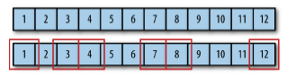
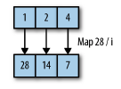
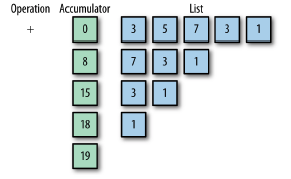

함수형 프로그래밍 기초 (2) 필터, 맵, 폴드(리듀스)
함수형 접근
함수형 프로그래밍 언어의 문법을 배우는 것은 쉽습니다. 하지만 함수형으로 생각하는 방법을 익히는 것은 쉽지 않습니다. Java 에서 Scala 나 Clojure 로 바꾸는 것보다 문제에 접근하는 방식을 바꾸는 것이 더 중요합니다.
함수형 프로그래밍은 좀 더 추상화된 레벨에서 코딩할 수 있도록 합니다. 이게 어떤 의미인지 간단한 예제로 살펴보겠습니다. 우리가 구현할 로직은 다음과 같습니다.
이름을 담은 String List 를 받아서
- 이름이 한 글자가 넘는 이름들 중에
- 각 이름을 첫 글자만 대문자로 변형하고
- 쉼표(,)로 구분한 하나의 문자열로 변환한다.
그래서 만약 입력 값이 “tony”, “a”, “steve”, “captain” 라면 반환값은 “Tony,Steve,Captain”이라는 문자열이 됩니다.
일반적인 처리
먼저 자바로 로직을 구현해봅시다.
1 | import java.util.List; |
어려운 로직은 아니죠. 코드를 자세히 살펴보면 작성한 로직을 다음 세 개의 그룹으로 묶어서(추상화) 생각해 볼 수 있습니다.
- 한 글자 이름을 걸러내고(filter)
- 이름 첫 글자를 대문자로 변형하고(transform)
- 쉼표로 구분한 하나의 문자열로 변환한다(convert)
함수형 처리
함수형 프로그래밍에서는 이러한 필터, 변경, 변환하는 작업을 쉽게 할 수 있도록 해줍니다. 해당 작업을 루프 안에서 직접 기술하는 것이 아니라 추상화된 메소드(filter, transform, convert)를 이용해 작업할 수 있고, 세부 사항에 대한 내용은 함수를 인자로 넘겨줘서 처리할 수 있습니다. 의사코드를 한번 볼까요?
1 | listOfNames |
위에서 작성했던 일반적인 코드와 다른 점이 보이시나요? 우리가 풀어야 할 문제에 대해 더 추상적인 레벨에서 접근할 수 있고, 세부적으로 처리해야 하는 작업의 내용은 함수 인자(람다)를 이용해 전달합니다.
이 개념을 스칼라로 구현해보겠습니다.
1 | val employees = List("tony", "a", "steve", "captain", "b", "thor", "hulk", "c"); |
의사코드와 거의 똑같습니다. 아주 간결하고 쉽게 읽히죠. 물론 함수의 이름은 map 이나 reduce 로 바뀌었지만 역할은 같습니다. 그리고 인자로 넘어가는 함수 모두 사용하는 변수의 이름은 크게 상관이 없기 때문에 스칼라에서는 이름을 생략하고 언더바(_)를 사용합니다.
이번엔 자바 8을 이용해 구현해보겠습니다. 자바는 스트림을 이용해서 처리할 수 있습니다.
1 | public String cleanNamesWithJava8(List<String> names) { |
이번엔 Groovy 로 작성해볼까요? findAll 을 이용해서 해당 조건을 만족하는 요소를 걸러내고 map의 그루비 버전인 collect 를 이용해서 맵핑하고 join 을 이용해 하나의 문자열로 변환합니다. 스칼라처럼 인자를 간단하게 치환하는데 그루비에서는 it 라는 키워드를 사용합니다.
1 | class TheCompanyProcess { |
마지막으로 클로저를 살펴보겠습니다. 클로저가 익숙하지 않으면 코드를 읽기 어려울 수 있습니다. 😅 하지만 자세한 문법을 몰라도 어떤 식으로 이루어졌는지는 살펴볼 수 있습니다. 클로저는 안에서 밖으로 실행됩니다. 그래서 제일 안쪽인 매개변수 list-of-emps 부터 시작해서 (filter ), (map ), (reduce ) 순으로 실행됩니다.
1 | (ns trans.core |
참고로 클로저에서는 이렇게 함수가 중첩되면 알아보기 어려워지기 때문에 thread-last(->>)라는 매크로를 이용해서 가독성을 높일 수 있습니다. 이렇게 되면 왼쪽에서 오른쪽으로 실행되는 순서가 바뀝니다.
1 | (defn process2 [list-of-emps] |
지금까지 일반적으로 작성한 코드와 함수형으로 작성한 의사코드, 그리고 의사코드를 구현한 코드를 살펴봤습니다. 자바, 스칼라, 그루비, 클로저 모두 함수 이름이나 문법은 조금씩 달랐지만 함수형 프로그래밍의 주요 개념을 포함하고 있습니다.
함수형으로 작성하면 더 추상적인 레벨에서 코드를 작성할 수 있습니다. 이렇게 추상적으로 작업을 하면 코드가 간결할 뿐만 아니라 런타임에서 최적화를 해줘서 성능을 높여주고 엔진 레벨에서 처리해야 하는 코드에 신경쓰지 않게 도와줍니다. 예를 들어 쓰레드를 이용해 병렬 처리를 해야 할 경우엔 par 를 붙여서 병렬 스트림을 만들기만 하면 됩니다.
1 | var parallelResut = names |
함수형 작업
앞에서 사용했던 함수형 작업은 다음과 같습니다.
- 필터 filter
- 맵 map
- 폴드/리듀스 fold/reduce
필터 filter

필터는 큰 컬렉션에서 조건에 맞는 작은 컬렉션을 만들어내는 연산입니다. 데이터를 필터링해서 걸러내는 거라고 볼 수 있습니다.
맵 map

맵은 해당 값에 함수를 적용해 새로운 컬렉션을 만드는 연산입니다. 값을 매핑하는 거라고 볼 수 있습니다.
폴드/리듀스 fold/reduce

폴드 또는 리듀스는 언어들 사이에서도 이름이 다양하고 조금씩 의미도 다릅니다. 이 작업은 연산(operation)과 누산기(accumulator)를 가지고 컬렉션에 있는 값을 처리해 더 작은 컬렉션이나 단일 값을 만드는 작업입니다. 그림은 목록에 있는 값을 모두 더하는 작업입니다. 여기 누산기에 초기 값이 있는 경우도 있습니다.
예제) 자연수 분류하기
다른 예제를 살펴봅니다. 고대 그리스의 수학자 Nicomachus 는 자연수를 과잉수, 완전수, 부족수로 나누는 분류법을 고안했다고 합니다. 여기서 완전수는 자신을 뺀 약수의 합과 같습니다. 예를 들면 6의 약수는 1, 2, 3, 6으로 1 + 2 + 3 = 6이므로 완전수입니다. 28도 1 + 2 + 4 + 7 + 14 = 28이므로 완전수입니다. 여기서 자신을 뺀 약수의 합을 진약수의 합(aliquot sum)이라고 합니다.
- 완전수 : 진약수의 합 = 수
- 초과수 : 진약수의 합 > 수
- 부족수 : 진약수의 합 < 수
일반적인 코드
위 내용을 자바로 작성해봅시다. 클래스에 필드로 해당 숫자를 저장하고 메소드를 이용해서 완전수 여부를 계산합니다. Map으로 캐시도 구현해놨고 기능을 여러 메소드로 분리해놨는데 이제 함수형으로 차근차근 바꿔나갈겁니다.
1 | public class ImpNumberClassifierSimple { |
조금 수정한 코드
위 코드를 함수형으로 조금 변환해보겠습니다.
1 | public class NumberClassifier { |
달라진 부분이 보이시나요? 먼저 클래스 내에 상태를 저장하지 않기 위해서 필드를 없애고 각 메소드에서 number 인자를 받도록 변경했습니다. 따라서 모든 메소드는 필드를 사용하지 않는 static 메소드로 바꿀 수 있고 함수 수준에서 재사용이 쉬워졌습니다.
하지만 내부에 상태를 저장하지 않기 때문에 캐시가 없기 때문에 성능이 떨어질 수 있습니다. 다음 포스트에서 메모제이션을 통해 상태성을 보존하는 방법을 살펴봅니다.
함수형 코드
이제 람다를 이용해 함수형 코드로 바꿔봅시다. 훨씬 간결해졌죠?
1 | public class NumberClassifierLambda { |
factorsOf메소드는 스트림을 생성하고 약수만 필터링합니다. 스트림은 종료 작업을 하기 전까지는 계속해서 작업을 할 수 있죠. 여기서는 sum()은 스트림을 종료하고 값을 생성해줍니다.
참고
Related Posts
- 함수형 프로그래밍 기초 (1) 왜 함수형 프로그래밍인가
- 함수형 프로그래밍 기초 (2) 필터, 맵, 폴드(리듀스)
- 함수형 프로그래밍 기초 (3) 클로저와 커링
- 함수형 프로그래밍 기초 (4) 메모제이션과 Lazy
- 함수형 프로그래밍 기초 (5) 코드 재사용
- 함수형 프로그래밍 기초 (6) 함수형 디자인 패턴
- 함수형 프로그래밍 기초 (7) 실전 예제
- 함수형 프로그래밍 기초 (8) 폴리글랏과 폴리패러다임